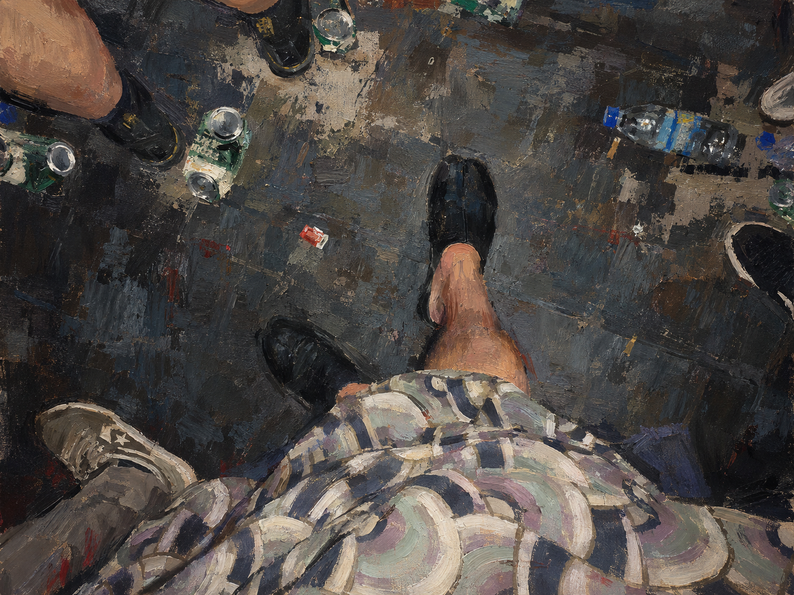
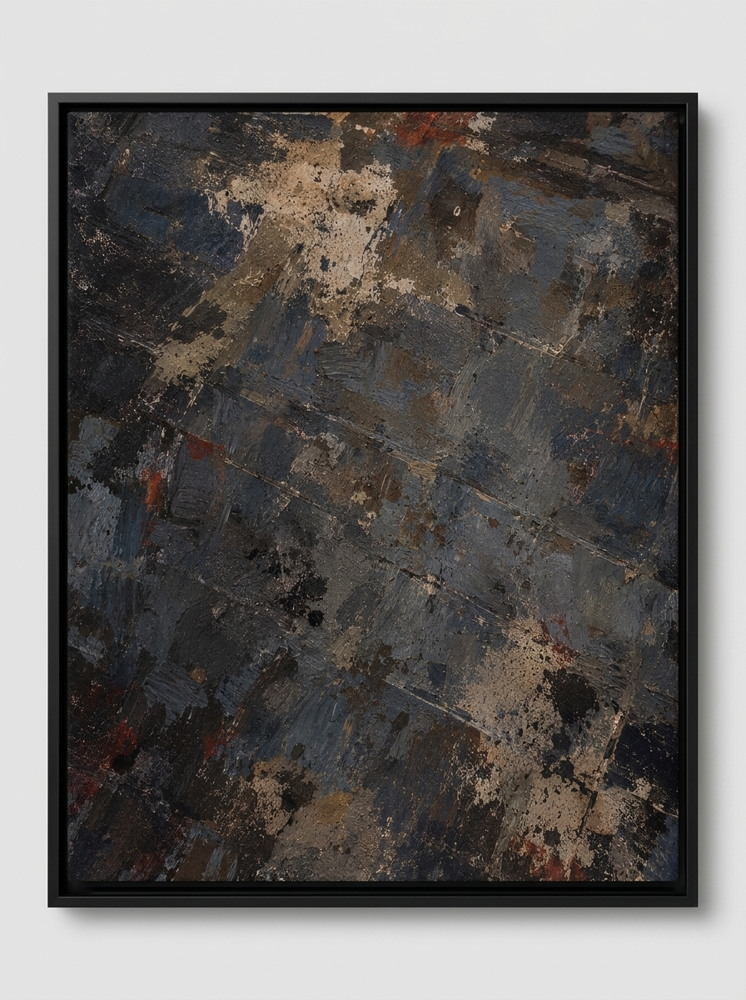
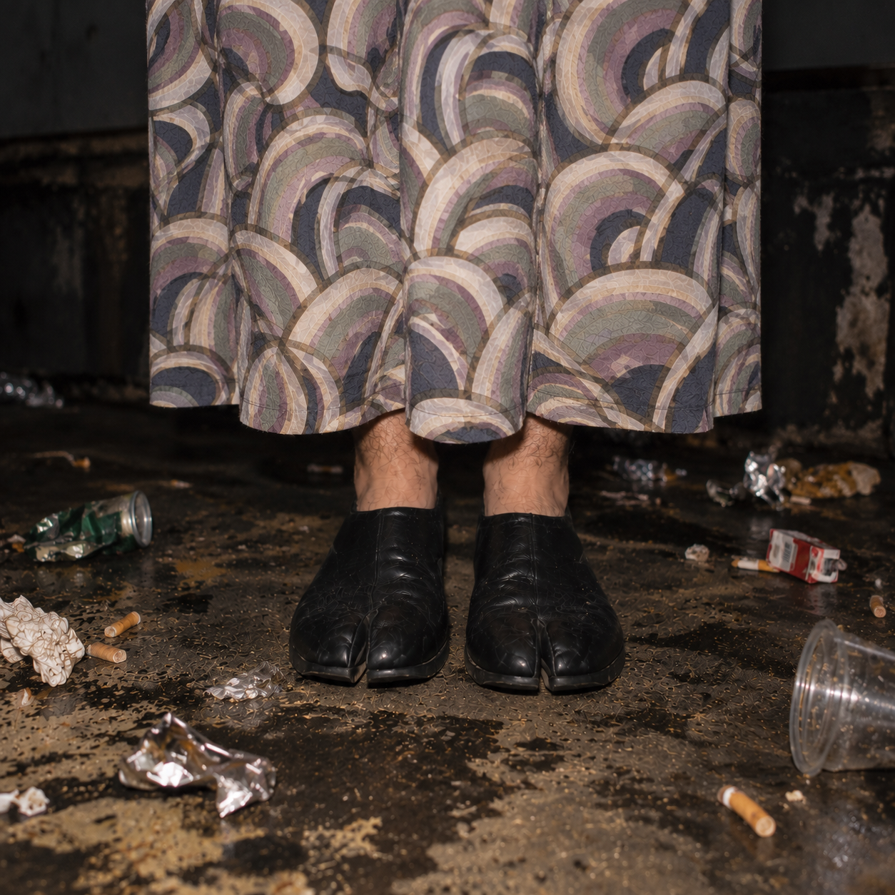
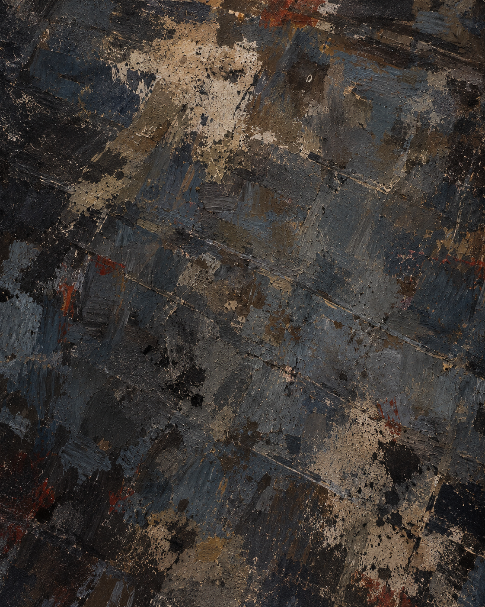
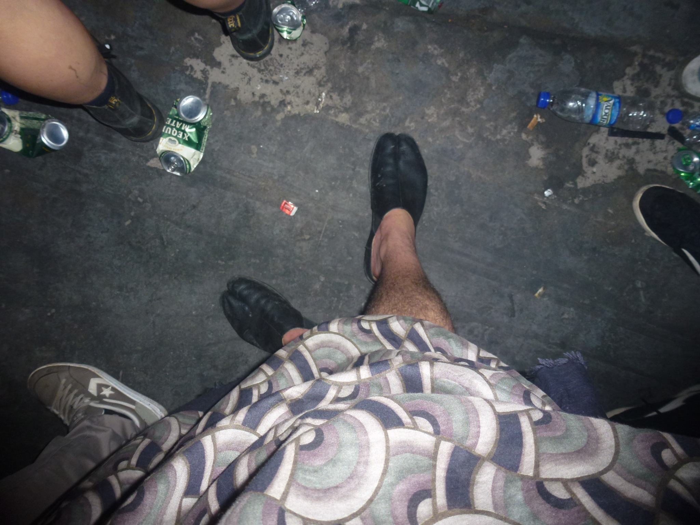

A PISTA
SÃO PAULO • DALLIDO.1988
Se A Dança observa o corpo em movimento, A Pista desloca o olhar para aquilo que permanece ao redor dele: o calçado, a roupa, o chão, os objetos e as marcas de uma situação.

A PISTA
A Pista é um desdobramento de A Dança.
Se A Dança observa o corpo em movimento, A Pista desloca o olhar para aquilo que permanece ao redor dele: o calçado, a roupa, o chão, os objetos e as marcas de uma situação.
A minissérie parte de fotografias realizadas em São Paulo. São registros de uma experiência específica, mas cada fotografia mostra apenas uma parte dela.
A partir desses originais, utilizo a inteligência artificial para retornar às imagens e imaginar aquilo que não foi fotografado. Novos enquadramentos, aproximações, detalhes e possibilidades surgem a partir das fotografias existentes. É também uma maneira de acessar uma memória por imagens que nunca chegaram a existir naquele momento.
A tabi aparece como um desses pontos de atenção. O seu formato dividido produz uma diferença real dentro da cena. Não é um elemento criado para tornar a imagem estranha: ele já estava ali. Ao ser aproximado, reconstruído e posteriormente levado para a pintura, passa a ocupar outro lugar dentro da experiência visual.
O mesmo acontece com a roupa e com o chão. O corpo vai desaparecendo enquanto os elementos que o cercavam ganham autonomia. Na última imagem, já não há corpo. Há apenas a superfície onde aquela experiência aconteceu.
corpo → objeto → roupa → espaço
A fotografia é o registro inicial. A inteligência artificial participa da investigação e da reconstrução. A pintura transforma essas descobertas em outra matéria.
“Entre o que foi fotografado, o que foi vivido e aquilo que hoje consigo imaginar existe o espaço onde a minissérie acontece.”



O PONTO DE PARTIDA CONCRETO
Fotografia original L1010595 registrada em São Paulo. O documento inicial cuja borda foi atravessada pela imaginação e pela reconstrução algorítmica de DALLIDO.1988.

A PISTA
SÃO PAULO • DALLIDO.1988
As imagens finais habitam a zona intermediária entre aquilo que aconteceu, aquilo que foi fotografado e aquilo que a memória e a inteligência artificial conseguem reconstruir.